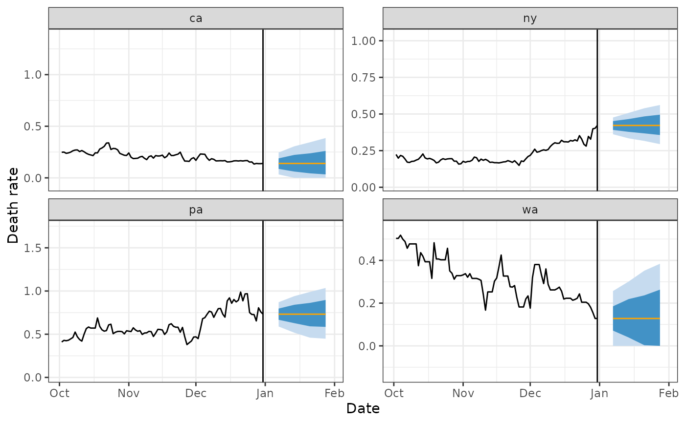

CDC Flatline Forecast Quantiles
Source:R/layer_cdc_flatline_quantiles.R
layer_cdc_flatline_quantiles.RdThis layer creates quantile forecasts by taking a sample from the interpolated CDF of the flatline residuals, and shuffling them. These are then added on to the point prediction.
Arguments
- frosting
a
frostingpostprocessor- ...
Unused, include for consistency with other layers.
- aheads
Numeric vector of desired forecast horizons. These should be given in the "units of the training data". So, for example, for data typically observed daily (possibly with missing values), but with weekly forecast targets, you would use
c(7, 14, 21, 28). But with weekly data, you would use1:4.- quantile_levels
Numeric vector of probabilities with values in (0,1) referring to the desired predictive intervals. The default is the standard set for the COVID Forecast Hub.
- nsims
Positive integer. The number of draws from the empirical CDF. These samples are spaced evenly on the (0, 1) scale, F_X(x) resulting in linear interpolation on the X scale. This is achieved with
stats::quantile()Type 7 (the default for that function).- by_key
A character vector of keys to group the residuals by before calculating quantiles. The default,
c()performs no grouping.- symmetrize
Scalar logical. If
TRUE, does two things: (i) forces the "empirical" CDF of residuals to be symmetric by pretending that for every actually-observed residual X we also observed another residual -X, and (ii) at each ahead, forces the median simulated value to be equal to the point prediction by adding or subtracting the same amount to every simulated value. Adjustments in (ii) take place before propagating forward and simulating the next ahead. This forces any 1-ahead predictive intervals to be symmetric about the point prediction, and encourages larger aheads to be more symmetric.- nonneg
Scalar logical. Force all predictive intervals be non-negative. Because non-negativity is forced before propagating forward, this has slightly different behaviour than would occur if using
layer_threshold(). Thresholding at each ahead takes place after any shifting fromsymmetrize.- id
a random id string
Value
an updated frosting postprocessor. Calling predict() will result
in an additional <list-col> named .pred_distn_all containing 2-column
tibble::tibble()'s. For each
desired combination of key's, the tibble will contain one row per ahead
with the associated dist_quantiles().
Details
This layer is intended to be used in concert with flatline(). But it can
also be used with anything else. As long as residuals are available in the
the fitted model, this layer could be useful. Like
layer_residual_quantiles() it only uses the residuals for the fitted model
object. However, it propagates these forward for all aheads, by
iteratively shuffling them (randomly), and then adding them to the previous
set. This is in contrast to what happens with the flatline_forecaster().
When using flatline() as the underlying engine (here), both will result in the
same predictions (the most recent observed value), but that model calculates
separate residuals for each ahead by comparing to observations further into
the future. This version continues to use the same set of residuals, and
adds them on to produce wider intervals as ahead increases.
Examples
r <- epi_recipe(case_death_rate_subset) %>%
# data is "daily", so we fit this to 1 ahead, the result will contain
# 1 day ahead residuals
step_epi_ahead(death_rate, ahead = 1L, skip = TRUE) %>%
recipes::update_role(death_rate, new_role = "predictor") %>%
recipes::add_role(time_value, geo_value, new_role = "predictor")
forecast_date <- max(case_death_rate_subset$time_value)
latest <- get_test_data(
epi_recipe(case_death_rate_subset), case_death_rate_subset
)
f <- frosting() %>%
layer_predict() %>%
layer_cdc_flatline_quantiles(aheads = c(7, 14, 21, 28), symmetrize = TRUE)
eng <- parsnip::linear_reg() %>% parsnip::set_engine("flatline")
wf <- epi_workflow(r, eng, f) %>% fit(case_death_rate_subset)
preds <- suppressWarnings(predict(wf, new_data = latest)) %>%
dplyr::select(-time_value) %>%
dplyr::mutate(forecast_date = forecast_date)
preds
#> # A tibble: 56 × 4
#> geo_value .pred .pred_distn_all forecast_date
#> <chr> <dbl> <list> <date>
#> 1 ak 0.0395 <tibble [4 × 2]> 2021-12-31
#> 2 al 0.107 <tibble [4 × 2]> 2021-12-31
#> 3 ar 0.490 <tibble [4 × 2]> 2021-12-31
#> 4 as 0 <tibble [4 × 2]> 2021-12-31
#> 5 az 0.608 <tibble [4 × 2]> 2021-12-31
#> 6 ca 0.142 <tibble [4 × 2]> 2021-12-31
#> 7 co 0.485 <tibble [4 × 2]> 2021-12-31
#> 8 ct 0.333 <tibble [4 × 2]> 2021-12-31
#> 9 dc 0.0802 <tibble [4 × 2]> 2021-12-31
#> 10 de 0.217 <tibble [4 × 2]> 2021-12-31
#> # ℹ 46 more rows
preds <- preds %>%
unnest(.pred_distn_all) %>%
pivot_quantiles_wider(.pred_distn) %>%
mutate(target_date = forecast_date + ahead)
if (require("ggplot2")) {
four_states <- c("ca", "pa", "wa", "ny")
preds %>%
filter(geo_value %in% four_states) %>%
ggplot(aes(target_date)) +
geom_ribbon(aes(ymin = `0.1`, ymax = `0.9`), fill = blues9[3]) +
geom_ribbon(aes(ymin = `0.25`, ymax = `0.75`), fill = blues9[6]) +
geom_line(aes(y = .pred), color = "orange") +
geom_line(
data = case_death_rate_subset %>% filter(geo_value %in% four_states),
aes(x = time_value, y = death_rate)
) +
scale_x_date(limits = c(forecast_date - 90, forecast_date + 30)) +
labs(x = "Date", y = "Death rate") +
facet_wrap(~geo_value, scales = "free_y") +
theme_bw() +
geom_vline(xintercept = forecast_date)
}
#> Warning: Removed 275 rows containing missing values (`geom_line()`).
